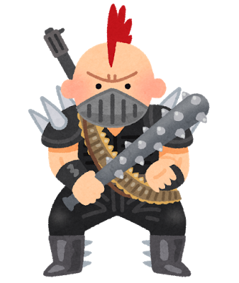

＜Jquery1つ目＞

今開いてるページの上部に移動するで。よく見かけるものやから使えるようにした方がいいぞ。
＜Jquery2つ目＞
ボタン
スライドパネル。画面内わちゃわちゃしないようにを使ってみるんや！
ボタンをクリックすると文字がでてくるで。もう一回クリックすると消えるんや！
＜Jquery3つ目＞
エラー表示時に便利なんやで。
[close]
closeをクリックすると言葉が消えるで
引用元:
https://www.webcreatorbox.com/tech/jquery-tips20